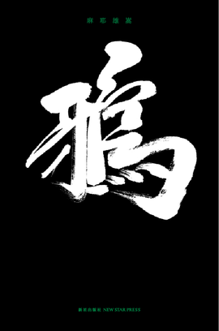
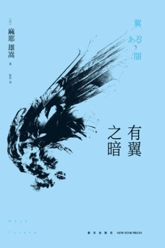

麻耶雄嵩(MAYA Yutaka) 1969年出生於三重县上野市，原名堀井良彦，出身自京都大学推研社，属於新本格第二期的成员，“新本格推理发源地”京都大学推理社团骨干成员，和绫辻行人等并列为新本格派推理第一代作家。
麻耶雄嵩作品数量不多，但每一部均能引发巨大争议。他的作品深沉厚重，结局往往具有不可思议的“崩坏性”。这种对传统推理理念的挑战，使得麻耶雄嵩一方面遭受保守读者猛烈批评，另一方面却被新一代读者追捧。
代表作品
《独眼少女》《有翼之暗》《鸦》
 
回到主页